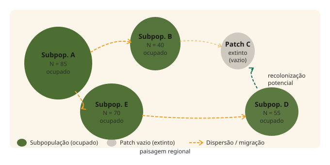
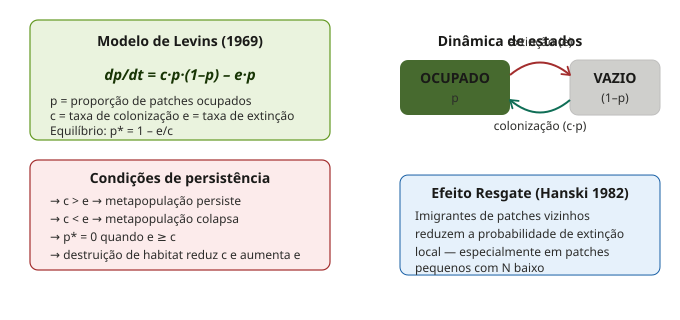
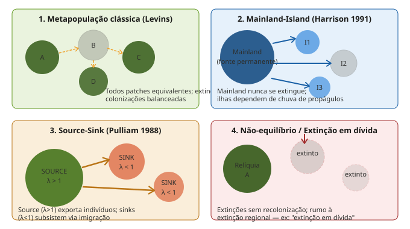
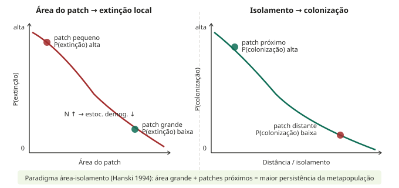
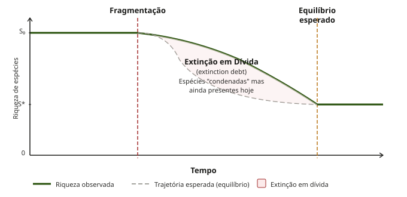
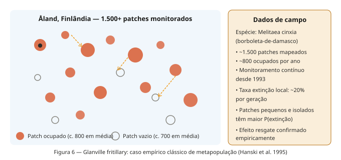
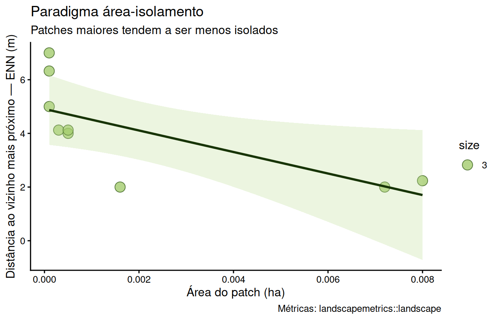
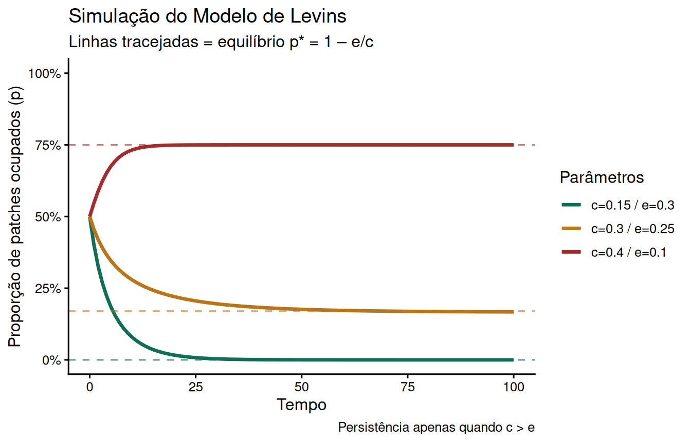

Semana 07: Metapopulações e Dinâmica de Extinção-Colonização
Da população local à persistência regional
Autor
Prof. Felipe Melo
Data de Publicação
26 de junho de 2026
Apresentação da aula
Use os controles do slide (setas ou teclas ← →) para navegar. Pressione F para tela cheia e ? para ver todos os atalhos do teclado.
1 Introdução
Na semana anterior, discutimos como a conectividade funcional media o movimento de organismos entre fragmentos de habitat. Mas o que acontece com as populações que habitam esses fragmentos ao longo do tempo? Como populações locais — cada uma sujeita a extinções estocásticas — conseguem persistir em escala regional?
A resposta está no conceito de metapopulação: uma população de populações, cujo destino coletivo depende do equilíbrio dinâmico entre extinções locais e recolonizações. Este é um dos marcos teóricos mais influentes da ecologia moderna, com implicações diretas para conservação, manejo e restauração de paisagens fragmentadas.
NotaDefinição central
Uma metapopulação consiste em um grupo de populações espacialmente separadas da mesma espécie que interagem em algum nível. A sobrevivência de longo prazo da espécie depende do balanço dinâmico entre extinções locais e recolonizações no mosaico de paisagens fragmentadas.
2 O conceito de metapopulação
2.1 Da população local à metapopulação
Uma população local ocupa um único fragmento de habitat e é sujeita a extinções estocásticas — tanto demográficas (variações aleatórias no número de nascimentos e mortes) quanto ambientais (perturbações que afetam todo o fragmento). Quanto menor a população, maior a probabilidade de extinção estocástica.
Uma metapopulação emerge quando múltiplas populações locais estão conectadas por dispersão, de modo que a extinção em um fragmento pode ser seguida de recolonização a partir de outros fragmentos ocupados. O conceito foi cunhado por Richard Levins em 1969 para descrever um modelo de dinâmica populacional de pragas de insetos em campos agrícolas, mas a ideia foi mais amplamente aplicada a espécies em habitats naturalmente ou artificialmente fragmentados.
NotaSubpopulações

Figura 1 — Conceito de metapopulação: subpopulações espacialmente separadas conectadas por dispersão. Patches vazios podem ser recolonizados a partir de patches ocupados vizinhos.
2.2 O que define uma metapopulação?
Para que um conjunto de populações locais seja considerado uma metapopulação, quatro condições precisam ser satisfeitas:
Habitat em manchas discretas que podem ser ocupadas por populações reprodutivas locais
Risco não negligenciável de extinção local em todos os patches — mesmo nos maiores
Recolonização possível: patches extintos podem ser recolonizados por dispersores de outros patches
Assincronia: as dinâmicas locais não são sincronizadas — extinções e colonizações não ocorrem ao mesmo tempo em todos os patches
Quando todas as extinções locais são sincronizadas (por exemplo, por uma seca regional severa), o efeito de resgate falha e a metapopulação inteira entra em colapso. Por isso, a heterogeneidade ambiental que causa assincronia entre patches é um componente essencial da persistência metapopulacional.
3 O modelo de Levins
3.1 A equação fundamental
O modelo de Levins é um modelo simples focado apenas na ocupação dos patches (isto é, a espécie está presente ou ausente) como uma forma de avaliar matematicamente a proporção de patches ocupados por uma espécie dado um mínimo de informação demográfica.
A equação de Levins descreve a taxa de mudança na proporção de patches ocupados (\(p\)):
\[\frac{dp}{dt} = c \cdot p \cdot (1 - p) - e \cdot p\]
Onde:
\(p\) = proporção de patches ocupados no tempo \(t\)
\(c\) = taxa de colonização (proporcional a \(p\) — mais patches ocupados, mais dispersores disponíveis)
\(e\) = taxa de extinção local
\(c \cdot p \cdot (1-p)\) = colonização de patches vazios \((1-p)\) por dispersores dos patches ocupados
\(e \cdot p\) = extinções nos patches atualmente ocupados
No equilíbrio (\(dp/dt = 0\)), a fração de patches ocupados é:
\[p^* = 1 - \frac{e}{c}\]
A metapopulação persiste apenas quando \(c > e\). Quando \(c \leq e\), o equilíbrio converge para \(p^* = 0\): extinção regional inevitável.

Figura 2 — Modelo de Levins: equação, condições de persistência, diagrama de estados e efeito resgate.
3.2 As limitações do modelo de Levins
O modelo de Levins assume que todos os patches de habitat são equivalentes (taxas de colonização e extinção são constantes entre patches), não há estrutura espacial explícita na distribuição dos patches, e o único parâmetro monitorado é a ocupação.
Apesar dessas simplificações, o modelo gera insights fundamentais:
Há um limiar de cobertura de habitat abaixo do qual a metapopulação colapsa inevitavelmente
A destruição de habitat não apenas reduz \(p\) diretamente — ela também reduz \(c\) (menos dispersores) e aumenta \(e\) (patches menores e mais isolados), criando um efeito duplo devastador
O tempo médio até a extinção de um patch individual é \(T_E = 1/e\) — patches com alta taxa de extinção têm vida curta
3.3 O efeito resgate
Indivíduos dispersores de patches ocupados servem não apenas para (re)colonizar patches de habitat, mas também para fornecer indivíduos a outras populações já estabelecidas. Assim, uma população que poderia ter se extinto devido ao tamanho populacional pequeno ou à estocasticidade demográfica/ambiental agora não se extinguirá devido a este reforço extra de patches vizinhos. Este reforço é o efeito resgate.
O efeito resgate modifica o modelo original de Levins: a taxa de extinção local \(e\) torna-se uma função decrescente de \(p\) — quanto mais patches vizinhos ocupados, menor a probabilidade de extinção local via suporte de imigrantes.
4 Tipos de metapopulação
A teoria metapopulacional não se aplica de forma uniforme a todas as paisagens fragmentadas. Harrison (1991) e outros autores identificaram diferentes estruturas metapopulacionais com implicações ecológicas distintas:

Figura 3 — Os quatro principais tipos de metapopulação, com estruturas e dinâmicas distintas.
4.1 Metapopulação clássica de Levins
Todos os patches são equivalentes em tamanho e qualidade. Extinções e colonizações são balanceadas. Nenhum patch é permanentemente seguro. Este é o cenário teórico do modelo original — raro na natureza em sua forma pura, mas um ponto de referência analítico indispensável.
4.2 Estrutura mainland-island
Um patch grande (o “continente”) tem risco de extinção negligenciável e funciona como fonte permanente de colonizadores. Os patches menores (as “ilhas”) dependem de uma chuva contínua de propágulos do continente para manutenção de suas populações. A colonização vem de uma única fonte e não depende da fração de patches ocupados. Este modelo se aproxima da teoria da biogeografia de ilhas de MacArthur & Wilson (1967).
4.3 Estrutura source-sink
Proposta por Pulliam (1988), esta estrutura reconhece a heterogeneidade de qualidade entre patches. Patches source têm taxa de crescimento intrínseco \(\lambda > 1\) — produzem excedente de indivíduos que emigram. Patches sink têm \(\lambda < 1\) — só mantêm populações graças à imigração contínua dos patches source. A remoção ou degradação de um patch source pode levar ao colapso de múltiplos patches sink dependentes.
4.4 Metapopulação em não-equilíbrio e “extinção em dívida”
Neste cenário, as extinções locais excedem as colonizações — a metapopulação está em declínio rumo à extinção regional, mas ainda não chegou lá. Este é o caso de paisagens que sofreram fragmentação recente: as espécies ainda estão presentes nos fragmentos, mas estão condenadas à extinção local progressiva. Este fenômeno é chamado de extinção em dívida (extinction debt), tema da próxima seção.
5 O paradigma área-isolamento
A área do patch de habitat emergiu como um preditor consistentemente bom da dinâmica metapopulacional. A área do patch, e o paradigma área-isolamento associado, foi vinculado à persistência aprimorada das espécies e à colonização, além de diminuir a probabilidade de extinção local.
O mecanismo por trás disso é duplo:
Patches maiores suportam populações maiores com menor estocasticidade demográfica
Patches maiores apresentam um alvo maior para dispersores oriundos de patches vizinhos
Isso repousa na suposição de que habitats maiores podem suportar populações maiores e representam um alvo maior para propágulos vindos de patches próximos.

Figura 4 — Efeitos da área e do isolamento nas probabilidades de extinção e colonização.
6 Extinção em dívida
Um dos conceitos mais importantes e contraintuitivos da teoria metapopulacional é a extinção em dívida (extinction debt): após uma perturbação que reduz e fragmenta o habitat, as espécies não desaparecem imediatamente. Elas persistem temporariamente nos remanescentes, mas estão condenadas à extinção local progressiva porque o novo tamanho e configuração do habitat não é suficiente para sustentar suas populações a longo prazo.
O resultado é uma defasagem temporal entre a perda de habitat e a perda de biodiversidade. Paisagens que perderam 70–80% do habitat podem ainda apresentar riqueza de espécies próxima à original se a fragmentação foi recente — mas com o tempo, as extinções ocorrerão uma a uma, até que a riqueza se equilibre ao novo patamar.

Figura 5 — Extinção em dívida: riqueza observada permanece artificialmente alta após a fragmentação, declinando progressivamente até o equilíbrio.
AvisoImplicação direta para conservação
A presença de uma espécie em um fragmento hoje não garante sua persistência futura. Fragmentos recém-criados podem abrigar populações viáveis por décadas antes da extinção local. Isso significa que inventários biológicos de fragmentos recentes superestimam sistematicamente a biodiversidade sustentável a longo prazo.
7 Caso empírico: a borboleta de Glanville
O exemplo mais estudado e documentado de dinâmica metapopulacional em campo é o da borboleta Melitaea cinxia (borboleta-de-damasco ou Glanville fritillary) nas ilhas Åland, sudoeste da Finlândia, estudada por Ilkka Hanski e colaboradores desde 1993.
Um destaque é a capacidade de Hanski de relacionar a ecologia metapopulacional a outras partes da ecologia (aplicada e pura). Este livro é uma demonstração convincente do poder da investigação empírica quando combinada com teoria simples.
O sistema de Åland possui aproximadamente 1.500 patches de habitat mapeados (prados secos com Plantago lanceolata e Veronica spicata, plantas hospedeiras das lagartas). Em média, ~800 patches estão ocupados e ~700 vazios em qualquer ano. Extinções e colonizações ocorrem continuamente, com taxas de extinção local de ~20% por geração.

Figura 6 — O sistema de Åland: patches ocupados e vazios com setas de movimento e dados de campo do monitoramento de longo prazo.
Resultados centrais do sistema de Åland:
Patches pequenos e isolados têm taxas de extinção significativamente maiores
O efeito resgate é confirmado empiricamente: patches com muitos vizinhos ocupados têm menor probabilidade de extinção local
A diversidade genética dentro de patches é positivamente correlacionada com a conectividade — patches isolados sofrem erosão genética acelerada
O modelo de função de incidência de Hanski (IFM) prediz corretamente a distribuição de ocupação com poucos parâmetros
8 Metapopulações e fragmentação no Brasil
A teoria metapopulacional tem aplicações diretas nos biomas brasileiros, onde a fragmentação avançou rapidamente nas últimas décadas:
Mata Atlântica: com menos de 12% de cobertura original, os remanescentes formam uma rede metapopulacional sob forte pressão. Espécies como o mico-leão-dourado (Leontopithecus rosalia) e o muriqui-do-norte (Brachyteles hypoxanthus) apresentam estrutura source-sink clara, com grandes reservas funcionando como fontes para fragmentos menores dependentes.
Cerrado: a fragmentação é mais recente que na Mata Atlântica, mas acelerada. Muitas espécies do Cerrado estão provavelmente em fase de “extinção em dívida” — presentes hoje nos fragmentos, mas com populações abaixo do mínimo viável a longo prazo.
Caatinga: menor histórico de estudos metapopulacionais, mas a fragmentação crescente por pastagem e agricultura cria redes de patches com conectividade estrutural variável e conectividade funcional ainda pouco quantificada para a maioria das espécies.
DicaConexão com a Semana 6
A conectividade funcional discutida na semana anterior é precisamente o mecanismo que determina as taxas de colonização \(c\) no modelo de Levins. Uma paisagem com alta permeabilidade de matriz tem \(c\) maior — e portanto maior probabilidade de manter a metapopulação acima do limiar de persistência.
9 Medindo dinâmica metapopulacional no R
9.1 Calculando métricas de isolamento com landscapemetrics
Código
library(terra)library(landscapemetrics)library(dplyr)library(ggplot2)# Paisagem de exemplo do pacotepaisagem <- terra::rast(landscapemetrics::landscape)# Métricas de patch relevantes para metapopulaçõesarea <-lsm_p_area(paisagem) # tamanho de cada patchenn <-lsm_p_enn(paisagem) # isolamento (distância ao vizinho)perim <-lsm_p_perim(paisagem) # perímetro# Unir métricasmetapop_df <- area |>rename(area_ha = value) |>left_join( enn |>rename(enn_m = value),by =c("layer", "level", "class", "id") ) |>filter(class ==1) # focar na classe de habitat principalhead(metapop_df)
# A tibble: 6 × 8
layer level class id metric.x area_ha metric.y enn_m
<int> <chr> <int> <int> <chr> <dbl> <chr> <dbl>
1 1 patch 1 1 area 0.0001 enn 7
2 1 patch 1 2 area 0.0005 enn 4
3 1 patch 1 3 area 0.0072 enn 2
4 1 patch 1 4 area 0.0001 enn 6.32
5 1 patch 1 5 area 0.0001 enn 5
6 1 patch 1 6 area 0.008 enn 2.24
9.2 Visualizando a relação área × isolamento
Código
ggplot(metapop_df, aes(x = area_ha, y = enn_m)) +geom_point(aes(size =3), color ="#27500A",alpha =0.7, shape =21, fill ="#97C459") +geom_smooth(method ="lm", se =TRUE,color ="#173404", fill ="#C0DD97", alpha =0.3) +labs(title ="Paradigma área-isolamento",subtitle ="Patches maiores tendem a ser menos isolados",x ="Área do patch (ha)",y ="Distância ao vizinho mais próximo — ENN (m)",caption ="Métricas: landscapemetrics::landscape" ) +theme_classic(base_size =12) +theme(legend.position ="right")

Relação área × isolamento para patches da classe 1 — base do paradigma área-isolamento de Hanski
9.3 Simulando o modelo de Levins
Código
# Modelo de Levins simples: dp/dt = c*p*(1-p) - e*plevins_model <-function(p0, c, e, t_max =100) { p <-numeric(t_max) p[1] <- p0 dt <-0.1 steps <- t_max / dt p_cont <- p0 traj <-data.frame(t =0, p = p0)for (i inseq_len(steps)) { dp <- (c * p_cont * (1- p_cont) - e * p_cont) * dt p_cont <-max(0, min(1, p_cont + dp))if (i %%10==0) traj <-rbind(traj, data.frame(t = i * dt, p = p_cont)) } traj$cenario <-paste0("c=", c, " / e=", e) traj$equilibrio <-if (c > e) round(1- e / c, 2) else0 traj}# Simular diferentes cenáriossims <-bind_rows(levins_model(p0 =0.5, c =0.4, e =0.1), # c >> e — persistelevins_model(p0 =0.5, c =0.3, e =0.25), # c > e — persiste fracolevins_model(p0 =0.5, c =0.15, e =0.3) # c < e — colapso)ggplot(sims, aes(x = t, y = p, color = cenario)) +geom_line(linewidth =1.2) +geom_hline(aes(yintercept = equilibrio, color = cenario),linetype ="dashed", linewidth =0.6, alpha =0.6) +scale_color_manual(values =c("#0F6E56", "#BA7517", "#A32D2D")) +scale_y_continuous(limits =c(0, 1),labels = scales::percent_format()) +labs(title ="Simulação do Modelo de Levins",subtitle ="Linhas tracejadas = equilíbrio p* = 1 – e/c",x ="Tempo",y ="Proporção de patches ocupados (p)",color ="Parâmetros",caption ="Persistência apenas quando c > e" ) +theme_classic(base_size =12)

Simulação do modelo de Levins: dinâmica da proporção de patches ocupados com diferentes razões c/e
10 Síntese
A teoria metapopulacional representa uma mudança fundamental de perspectiva: a unidade relevante de conservação não é a população local — é a rede de populações conectadas por dispersão na paisagem. Desta perspectiva emergem quatro lições centrais:
1. Populações locais são inerentemente transitórias. Extinções locais são esperadas e não constituem necessariamente um sinal de alarme — desde que a recolonização seja possível. O problema começa quando a conectividade é insuficiente para sustentar o fluxo de recolonização.
2. A conectividade determina \(c\) — e portanto a persistência. A permeabilidade da matriz, a presença de stepping stones e a largura dos corredores são variáveis que diretamente modulam a taxa de colonização no modelo de Levins. Conservar conectividade é conservar \(c\).
3. Extinção em dívida é um risco invisível. Fragmentos recentes podem parecer saudáveis quando na verdade estão em trajetória de colapso. Estratégias preventivas — baseadas em modelagem metapopulacional — são mais eficazes do que estratégias reativas.
4. Patches-fonte merecem proteção prioritária. Em estruturas source-sink, a perda de um único patch-fonte pode desencadear o colapso de múltiplas populações sink dependentes. Identificar e proteger esses patches é urgente.
11 Leituras recomendadas
Referência
Por que ler
Levins (1969) Bull. Entomol. Soc. Am. 15:237–240
Artigo fundacional — origem do conceito e do modelo
Hanski (1991) Biol. J. Linn. Soc. 42:3–16
Extensões do modelo de Levins; efeito resgate; heterogeneidade
Hanski & Gilpin (1997) Metapopulation Biology
Livro-referência completo
Hanski (1998) Nature 396:41–49
Revisão sintética acessível
Pulliam (1988) Am. Nat. 132:652–661
Modelo source-sink original
Tilman et al. (1994) Nature 371:65–66
Extinção em dívida por destruição de habitat
Hanski et al. (1995) Nature 373:523–526
Sistema da borboleta de Åland — caso empírico clássico
12 Atividade prática
ImportanteAtividade da Semana 7 — entrega via Google Sala de Aula
Usando o raster de uso do solo da disciplina (ou um de sua escolha):
Calcule as métricas de patch lsm_p_area e lsm_p_enn para a classe de habitat principal.
Com base no paradigma área-isolamento, identifique os 3 patches com maior risco de extinção local (pequenos e isolados) e os 3 com maior probabilidade de funcionar como fonte (grandes e bem conectados).
Usando o modelo de Levins simulado em aula, defina valores plausíveis de \(c\) e \(e\) para uma espécie de sua escolha nessa paisagem e avalie se a metapopulação estaria acima ou abaixo do limiar de persistência.
Discuta como uma intervenção específica (corredor, stepping stone, melhoria de matriz) alteraria os parâmetros \(c\) e \(e\) e o desfecho da simulação.
Entregue relatório .qmd renderizado como HTML com código e interpretação integrados.
Semana 7 — Ecologia de Paisagens BO-304, UFPE, 2026.1. Material em desenvolvimento contínuo.